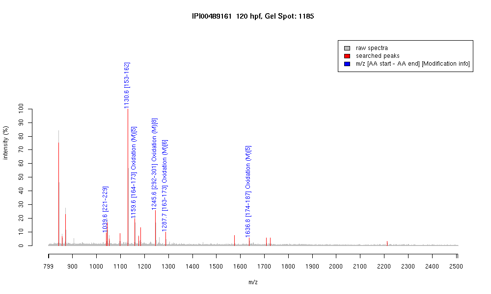

| Name | "PREDICTED: similar to Tubulin, beta, 2" |
|---|---|
| MW | 39709.1 |
| PI | 4.84 |
| Mascot Protein Score | 97 |
| Masses (matched / unmatched) | 6 / 20 |

| Peptide | MZ (calc) | MZ (observed) | Error (DA) | Error (PPM) | Start | Stop | Modifications |
|---|---|---|---|---|---|---|---|
| YLTVAAVFR | 1039.5935 | 1039.59 | -0.0035 | -3 | 221 | 229 | |
| FPGQLNADLR | 1130.5953 | 1130.5996 | 0.0043 | 4 | 153 | 162 | |
| LAVNMVPFPR | 1159.6292 | 1159.6318 | 0.0026 | 2 | 164 | 173 | Oxidation (M)[5] |
| ISEQFTAMFR | 1245.5933 | 1245.5997 | 0.0064 | 5 | 292 | 301 | |
| ISEQFTAMFR | 1245.5933 | 1245.5997 | 0.0064 | 5 | 292 | 301 | Oxidation (M)[8] |
| KLAVNMVPFPR | 1287.7241 | 1287.7275 | 0.0034 | 3 | 163 | 173 | Oxidation (M)[6] |
| LHFFMPGFAPLTSR | 1636.8304 | 1636.8406 | 0.0102 | 6 | 174 | 187 | Oxidation (M)[5] |